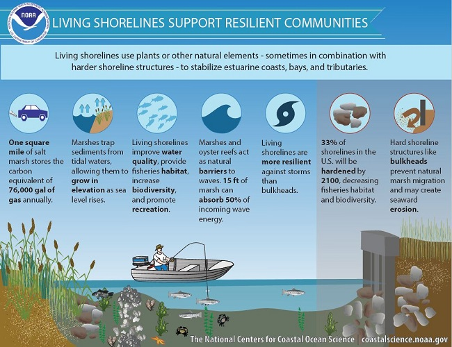

Living Shoreline means using natural techniques to protect your shoreline from erosion. A Living Shoreline enhances near-shore habitat while making your shoreline safer and more natural.

Coastal Resilience - South Carolina
Living Shorelines
The Nature Conservancy has partnered with the South Carolina Department of Health and Environmental Control (DHEC) to help coastal property owners visualize energy conditions along South Carolina’s estuarine shorelines. Show moreThe South Carolina Living Shoreline Explorer application provides users with a preliminary look at specific site conditions that are important to consider when determining if a site is suitable for a living shoreline. The application classifies shoreline energy levels associated with wind wave energy, boat wake energy, and maximum potential fetch. The information gathered through this tool can be used when planning for a potential living shoreline project and during initial permitting discussions with regulatory agencies. The instructions and methods documents below provide additional information on this project, instructions for using the application, and methods used to classify shoreline energy levels. For more information on living shorelines, visit the SC Living Shoreline website. For permitting guidance, please visit DHEC’s living shoreline website. Show Less
To get started, use the search bar below to navigate to a property address, or manually zoom to an area using the map on the right.
Estuarine Shoreline Energy Conditions
HIDESHOWCONTROLSCONTROLS
HIDESHOWCONTROLSCONTROLS
Estuarine Shoreline Energy Conditions
Latitiude: , Longitude
Pan and zoom the Wind Wave Energy map to update the extent of all three maps.